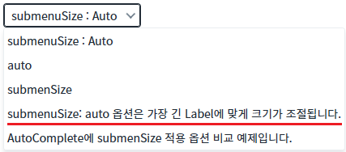
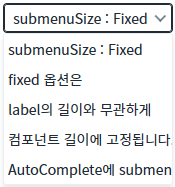
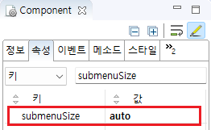

AutoComplete과 SelectBox의 'submenuSize' 속성을 사용하여 선택 항목의 너비를 자동으로 조절할지를 설정한 예제입니다. 다음은 'submenuSize' 속성의 설정별 동작입니다.
auto : 항목의 Label 중 가장 긴 텍스트 길이에 맞춰 선택 항목의 너비가 조절됩니다.
fixed : 컴포넌트의 너비와 동일하게 선택 항목의 너비가 표시됩니다.
AutoComple의 submenuSize 속성의 옵션 비교 auto / fixed
SelectBox의 submenuSize 속성의 옵션 비교 auto / fixed
1
선택 항목의 너비를 비교합니다. (AutoComplete, SelectBox 동일)
'submenuSize : Auto'가 표시된 컴포넌트는 항목이 표시되는 박스의 너비가 가장 긴 항목의 문자열 길이에 맞춰집니다.
Image 1.브라우저(Chrome) 실행 예시[1] - submenuSize = auto

'submenuSize : Fixed'가 표시된 컴포넌트는 항목이 표시되는 박스의 너비가 컴포넌트의 너비와 동일하게 표시됩니다.
Image 2.브라우저(Chrome) 실행 예시[2] - submenuSize = fixed

1
컴포넌트의 속성을 설정합니다.
[필수] submenuSize
(옵션 설명)
- auto : [default] 항목의 Label 중 가장 긴 텍스트 길이에 맞춰 선택 항목의 너비가 조절됩니다.
- fixed : 컴포넌트의 너비와 동일하게 선택 항목의 너비가 표시됩니다.
(설정 예시)
예시 1) submenuSize auto 사용
submenuSize="auto"
예시 2) submenuSize fixed 사용
submenuSize="fixed"
Image 3.웹스퀘어 스튜디오의 Component View 예시

Example 1.Source
<!-- AutoComplete 컴포넌트의 submenuSize 설정 예시입니다. --> <w2:autoComplete submenuSize="auto"> <!-- 중략 --> </w2:autoComplete>
submenuSize